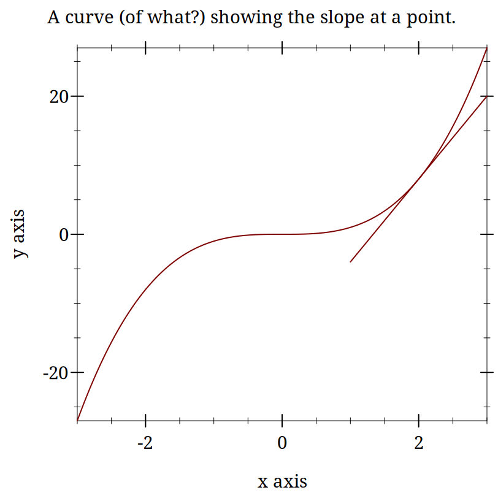

3 Differential Equations and Spiking Neuron Models
3.1 Differential Equations and Spiking Neuron Models
3.1.1 Goals
Why are Differential Equations an important technique for computational modelling in psychology and neuroscience?
Work on the modeling of the action potential eventually resulted in Nobel Prizes. The Hodgkin-Huxley equations that resulted from this work are differential equations. Subsequent models, even very marked simplifications such as the Integrate and Fire model, are also differential equations. When you rely on a simulation software that allows you to create populations of such neurons you are using, at least indirectly, a differential equation. It is worth knowing what they are.
Exponentials show up a lot in neuroscience and psychology. When you see a rate of change in a quantity that is proportional to the magnitude of that quantity there is an exponential hidden in there somewhere.
Further, modern computers and their powers mean that we can often use differential equations in our models by naively implementing their effects as a series of very tiny steps. We might gain insight if we knew more about how to solve differential equations analytically, but often, if our goals our practical, that is running a simulation to see the result, we can be ignorant of differential equations at that level, and just deploy them as another practical tool. Just like you can now use software to implement Monte Carlo simulations in statistics without knowing the full details of the theory mathematically.
This gives us the following goals for this section:
Learn what a Differential Equation is as a mathematical entity,
Get an intuition for differential equations by thinking of them as slopes,
Learn how they emerge as a natural effort to account for changing quantities in neuroscience and psychology,
Put this altogether by writing programs to implement the integrate and fire point neuron model and a version of the Hodgkin-Huxley neuron model.
In preparation for things to come you might try to remember (or look up) what is the integral of one over x? In symbols, what is \int \frac{1}{x}~ dx?
3.1.2 The Action Potential - a very short review
Our goal is to use differential equations in code written to simulate spiking neurons. Therefore, we ought to remind ourselves about the basics of what is a neuronal action potential.
What are the axes?
What ion causes the upward deflection?
What causes the repolarization?
Who discovered the action potential?
Who won the Nobel Prize for characterizing the ionic events of the action potential experimentally and building a mathematical model?
Did you draw this?
An aside: Notation
Mathematics is full of notation. And one person’s notation is another person’s jargon. The key thing is not to let yourself be scared off. Often the motivation for mathematical notation is just convenience: condensing something that would take a long time to say or write into an abbreviated form. It is the equivalent of saying "meh" or "lol". Mathematical notation is just a technical emoji. You probably know the mathematical idea that is being represented; you just don’t know the abbreviation that is being used. So, just like you can teach granma the meaning of TMI you can with a little bit of practice get used to the Greek symbols that appear so often in mathematical presentations.
As a first exercise, write out in long hand what is meant by the following:
Did you write: this?
3.1.2.1 Multiple Ways to Say the Same Thing
Another thing to note about mathematical notation is that it often provides more than one way to say the same thing. Which notation is used depends on context and the technical community the work is intended for. Computer scientists frequently use i as a variable for indexing a loop. To the mathematician it is the complex part of an imaginary number i~=~\sqrt{-1}, but engineers use j instead. Here are some of the many different ways you may see the derivative depicted.
Leibniz notation: \frac{dx}{dt}
Physicists often use this for derivatives with respect to time (t): \dot{x}
Mathematicians often use the variable itself as a representation for the function and use the number of "primes" to indicate how many derivatives to take: x’
Or they may make the variable representing the function explicit if they think that will make their reasoning clearer in the present context: f’(x)
This is called operator notation. You won’t see it as much, but when doing certain kinds of proofs or reasoning more abstractly it can be much more convenient: D~f
3.1.3 Derivatives are Slopes
There may be many ways to write out the notation for a derivative, but the uniting concept behind them is as "rates of change." They are essentially just the slopes you learned about in secondary school. The old "rise over run" where the length of the run is made very, very small.
You might want to pause here and make sure you remember what a slope is.
Can you write the equation to find the slope of a line?
How would you apply this to a curve and not a line?
When in doubt return to definition. What is the definition of a slope of a function?
3.1.3.1 Use your computer as a tool for exploration
Demonstrating something mathematically can give a great deal of satisfaction and ultimately is the guarantor of whether something is correct. Often we want to know more than whether something is correct in the abstract, we want to see specific examples. Sometimes pencil and paper are the best approach, but often we can do the same thing more quickly and more extensively by using our computer. Let’s digress to use our computer for visualizing ideas about slopes. You should try to get these to work in Dr. Racket.
> (begin (define xs (list 1 2 3 4 5)) (define ys (list 2 4 6 8 10)) (plot (lines (map vector xs ys)) #:title "A Line: What is it's slope?"))

> (plot (list (function (lambda (x) (expt x 3)) (- 3) 3) (function (lambda (x) (- (* 12 x) 16)) 1 3)) #:title "A curve (of what?) showing the slope at a point.") 

Derivatives are Instantaneous Slopes
These plots are intended to demonstrate the idea that locally everything is linear. If you calculate the slope for your curve exactly like you do for a line you will get something that starts to look more and more like a line the smaller your "run" gets. The idea is that you pick two points that are "close enough" and your derivative becomes "close enough." At least with a computer. Mathematically, you just keep going to the limit.
Definition of the Derivative
\frac{df}{dx} = \lim_{h \to 0}\frac{f(x + h) - f(x)}{(x + h) - x}
3.1.4 Using Derivatives to Solve Problems With a Computer
3.1.4.1 What is the square root of 128?
We want to know the value of x that makes 128 =x^2 true?
Always use the computer for the busy work when you can. Your computer can solve many mathematical problems for you. For example, requiring symalg we can programatically find that the derivative of x^2 is 2 x. Look at the code for this margin-note and you will see how I computed that with racket (and then typeset it).
Come up with a guess.
Calculate the error.
Adjust your guess based on the error.
This adjustment will use the derivative.
3.1.4.1.1 Working Through an Example
Let’s say we want to solve for x when x^2 = 128. How might we start? When in doubt, guess!
How much is your guess off?
What we want to do now is adjust our guess. Since we know how much our function changes its output for each adjustment in the input, How do we know this? Our derivative is a rate of change. we can revise our guess based on this necessary adjustment. If we are still wrong, we just repeat the process.
To get there let us consider representing the ratio of how our function’s output changes for changes in input. We can just make things concrete.
If you take a look at the definition of the derivative above you will see the resemblance, except for the absence of the limit. When trying to solve this problem we don’t initially know both inputs, but we do know that when we put in the solution to our problem we will get 128. And we also know that we can compute the derivative. A bit of rearranging and renaming give us.Can you map the steps I took to get this equation from the one above?
What is square root of 128?
> (define (df g) (* 2.0 g))
> (define (update-guess g target) (/ (- target (expt g 2.0)) (df g)))
> (define (my-sqrt [target 128.0] [guess 7.0] [tol 1e-6]) (let* ([udg (update-guess guess target)] [current-guess (+ guess udg)]) (if (< udg tol) current-guess (my-sqrt target current-guess))))
11.38357546408394 |
3.1.4.2 Homework: Computing the Cube Root
What is a cube root?
What is the derivative of x^3?
Write a Racket program to computer the cube root of a give number.
3.1.5 Practice Simulating With DEs
3.1.5.1 Frictionless Springs
We want to code neurons, but to get there we should feel comfortable with the underlying tool or we won’t be able to adapt it or re-use it for some new purpose. I don’t want to give you a fish. I want to teach you how to fish.
By working with an example simpler than a neuron, and one for which you might have more intuition, such as a simple spring or "slinky", I hope you will get a better feel for how the numbers, equations, and code all relate. Then we can move on to the neuronal application.
The equation of a frictionless spring is:
where ’s’ refers to space, ’t’ refers to time, and ’P’ is a constant, often called the spring constant, that indicates how stiff or springy the spring is.
Imagine that we knew this derivative. It would tell us how much space the spring head would move for a given, very small, increment of time. We could then just add this to our current position to get the new position and repeat. This method of using a derivative to iterate forward is sometimes called the Euler method.
Returning to our definition of the derivative:
But our spring equation is not given in terms of the velocity it is given in terms of the acceleration which is the second derivative. Therefore, to find our new position we need the velocity, but we only have the acceleration. However, if we knew the acceleration and the velocity we could use that to calculate the new velocity. Unfortunately we don’t know the velocity, unless ... , maybe we could just assume something. Let’s say it is zero because we have started our process where we have stretched the spring, and are holding it, just before letting it go.
How will our velocity change with time?
And we have a formula for this. We can now bootstrap our simulation.
Note the similiarity of the two functions. You could write a helper function that was generic to this pattern of old value + rate of change times the time step, and just used the pertinent values.
How do we know the formula for acceleration? We were given it in Equation 1 above.
> (require "./code/spring.rkt")
> (begin (define spring-results (release-spring)) (plot (lines (map vector (map fourth spring-results) (map third spring-results)))))

IAMHERE
3.1.5.2 Damped Oscillators
Provide the code for the damped oscillator. It has the formula of
This should really only need to change a couple of lines to update the model to be able to handle the damped version as well. You might want to edit spring.rkt.
3.2 Integrate and Fire Neuron
In this section we take a look at the history and math of the computational model of neuron firing called "Integrate and Fire" (I&F). The I&F model uses math essentially the same as the spring example.
Is the integrate and fire model used much in modeling in the present time.? Answer.
3.2.1 History of the Integrate and Fire Model
3.2.1.1 Louis Lapicque - Earlier Computational Neuroscientist
Modern Commentary on Lapique’s Neuron Model

Original Lapique Paper (scanned; pdf) Brief Biographical Details of Lapicque.
3.2.1.2 Lord Adrian and the All-or-None Action Potential
When was the Action Potential Demonstrated? What was the experimental animal used by Adrian? Answer (pdf).
Want more details? There is an excellent free book available Spiking Neurons. They also have another more modern book out too Neuronal Dynamics.
3.2.2 The Integrate and Fire Equation
The Integrate and Fire Equation
3.2.3 Electronics Background
What is Ohm’s Law?
What is Kirchoff’s Point Rule?
What is Capacitance?
What is the relation between current and capacitance?
3.2.3.1 Formula Discussion Questions
What does \frac{dV}{dt} mean?
What does \frac{1}{\tau} mean?
Why does the voltage term on the right have a negative sign?
What is I(t)?
Put it all together
The voltage in the future will be a sum of whatever current is being added minus a function of the current voltage.
Why, if we don’t reach a threshold to fire an action potential, do we see an exponential decay?
This is where you need to remember what came before. See that the change in voltage is proportional to itself. Solutions to these types of equations involve exponentials. Remember? But note the sign. It is negative. That is why it is an exponential decay instead of an exponential growth.
Deriving the IandF Equation
(define dt 0.05) (define max-t 10) (define init-t 0.0) (define start-time 1.0) (define stop-time 6.0) (define cap 1) (define res 2) (define threshold 3.0) (define spike-display 8.0) (define init-v 0.0) (define voltage init-v) (define injection-current 4.3) (define injection-time (cons start-time stop-time)) (define tau (* res cap))
This is a good habit to develop with your code. Do not "hard code" in values for variables that you will have to write in multiple locations in a file. It makes it hard to update and debug your code. Give sensible and short names to things you will use in your code. Then define values for those at the top of your code. This gives you one place to look for explanations and reminders, and also gives you a place where when you make a single change it will propagate through your code.
(define (update old-value rate-of-change time-step) (+ (* rate-of-change time-step) old-value))
This is the same updating rule that we used in the spring example. It is a rewriting of the definition of the derivative. This is sometimes referred to as [[https://en.wikipedia.org/wiki/Euler_method][Euler’s method]].
(define (dv-dt localres locali localv) (* (/ 1 tau) (- (* localres locali) localv)))
(define (between x #:lower [lower (car injection-time)] #:upper [upper (cdr injection-time)] #:if-true [if-true injection-current] #:if-false [if-false 0.0]) (if (and (>= x lower) (<= x upper)) if-true if-false))
(define (voltage-choice curr-volt spike-status #:thr [thr threshold] #:sd [sd spike-display]) (cond ((and (> curr-volt thr) (not spike-status)) sd) (spike-status #i0.0) (#t curr-volt)))
Just as we were given the equation for a spring, here we are given the equation for the I&F neuron, which we translate from math to code. These are being defined as functions. You can do the same in both Python and R, but will need a different keyword and syntax.
In addition, I create some smaller "helper" functions. It would be possible to collapse all this into one big function, but that would be harder for me to understand, and harder for you to understand. In general, try to write short little functions that do one thing. Then you can chain those small functions together to accomplish the larger task.
(define (run-iandf-sim #:tolerance [tolerance 0.1] #:max-time [max-time 10] #:max-iter [max-iter 10000]) (for*/fold ([t 0] [i 0] [v 0] [accum '()] #:result (reverse accum)) ([n (in-range max-iter)]) #:break (> t max-time) (let ([spike (< (abs (- v spike-display)) tolerance)]) (values (+ dt t) (between t) (voltage-choice (update v (dv-dt res i v) dt) spike) (cons (list t i v) accum)))))
> (require "./code/iandf.rkt")
> (begin (define iandf-results (run-iandf-sim #:max-time 10.0)) (plot (lines (map vector (map first iandf-results) (map third iandf-results)))))
Again, if you squint, you will see similarities to the Spring exercise. Though things may look more complex here it is only because I have so many more /local/ variables to define. The basic flow is still just a *loop*. Each of those local variables gets a start value and then a rule for updating each time through the loop. Later local variables can depend on the values of that came earlier in the list (that is the reason for the asterisk in =do*=). The loop also has a test condition for when to quit (like a "while" loop), and what it should do when that condition is met. Here it collects all the data into a big long list and reverses the order. I was pushing the recent values on to the front of the list each time, but now I need to reverse it so that time flows as we expect.
Define variables, and even functions, where you need them. It might be overkill here, but the idea is a good one to try and get in the habit of. When you need a function or a variable for only a small part of your program, make them local. Then they won’t interfere with other parts of your program, and after you use them your programming language system can garbage collect them freeing up your computer’s memory and your namespace. Local variables, local functions, and even un-named, so-called lambda functions, can make your code easier to read and understand as things are defined where they are needed and used. Defining local variables and functions does not require special keywords in Python and R, but can be inferred from the code itself.
Visualizations can be essential in helping you to see and understand the function of your computational program. Gain a good familiarity and facility with the plotting functions of whatever programming language you plan to use.
In this function we can give a name to our plot and feed in the data it will use. In fact, I did not have to create and save the data. I was able to generate it internal to the function itself. This is sometimes thought of as function /composition/. You will also hear people talk of /chaining/ functions or /piping/. Think of how you can connect a series of pipes together to get a flow from beginning to end. In the case of a programming language each of the pipes may do something to what it is carrying and the result can be a processed data stream.
This weeks homework is to write a I&F program that does what I just did. It should generate a "spike" when given a constant input. Be sure to look at my code to see how that spike is created. If you don’t understand that you will have a hard time.
Related to the last point, does the I&F neuron truly spike?
- If (1) goes easy then here are some other things to try:
create a refractory period for your neuron.
give a noisy input rather than the single flat line I demonstrate.
Look at how many times your neuron spikes to constant input. Is that what a real neuron does (try searching for Mainin and Sejnowski)? Does that affect the utility of the I&F model for computational neuroscience?
Lastly, if all that goes quickly, and it will for some of you, but not most of you, try creating variations of this simple I&F model.
Upload your code to LEARN for credit.